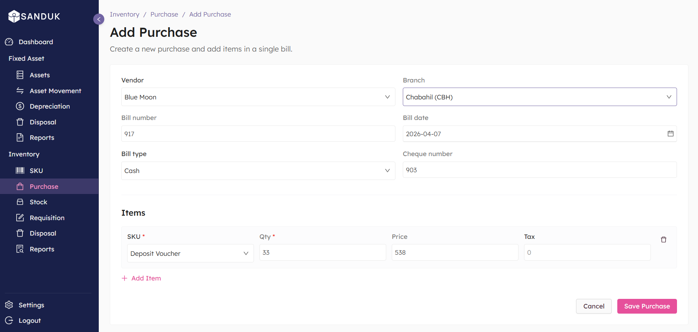

Centralized Register
Maintain a unified record for all organizational assets.
Manamuri helps organizations manage fixed assets and inventory from acquisition to disposal with stronger governance, lifecycle visibility, and audit-ready reporting.

Manual and disconnected asset tracking leads to weak visibility, massive reconciliation effort, and constant audit challenges. Manamuri fixes this with a single source of truth.
Everything you need to manage the complete asset lifecycle in one place.
Maintain a unified record for all organizational assets.
Track movement and quantity of across any location.
Simplify transfers between branches or departments.
Automated calculations and accounting-ready reports.
Organize assets across geographic locations easily.
Trace any change or movement back to the source.
Seamless management from acquisition to final disposal.
Onboard new assets into the system.
Monitor status and location in real-time.
Move assets with full authorization.
Calculate value loss automatically.
Retire or sell assets when needed.
Enforce policies across asset usage.
Reduce human effort by up to 80%.
Stay compliant with ease.
Know exactly what you own and where.